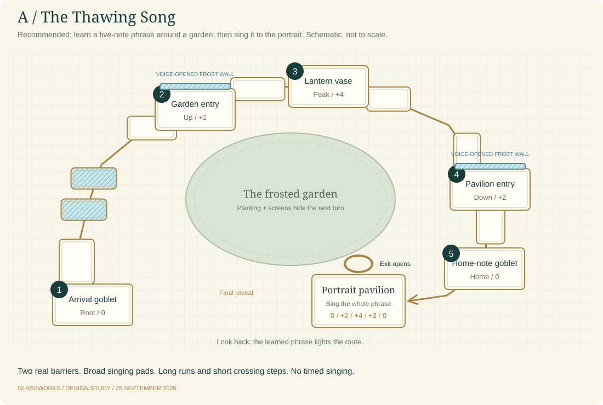

Truthful Merc reactions
The current game treats some required breaks as path openings. The planned correction uses the actual outcome. Ordinary breaks celebrate; only a real gate or exit opening gets that line.
Learn five notes through a frosted garden. Open two real barriers. Bring the whole phrase to the final portrait. Compare the routes before choosing one to build.

The current game treats some required breaks as path openings. The planned correction uses the actual outcome. Ordinary breaks celebrate; only a real gate or exit opening gets that line.
Keep broad landings. Add long causeways and deliberate cross-steps. Rendered orientation, collision, intentional gaps and safe camera space must agree.
Keep today's route for comparison. Build one approved design under a new development ID, then decide whether it replaces the intro. No campaign or unlock changes are made here.